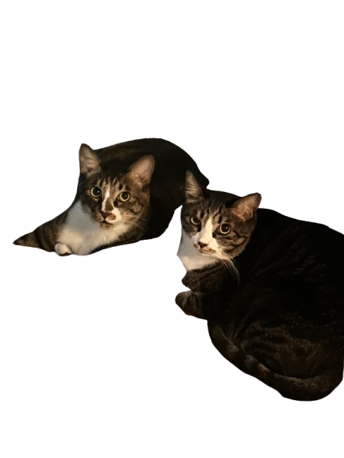

[미션 2] 데이터의 방
0℃의 물 100g에 최대한 녹을 수 있는 질산 칼륨과 염화 나트륨의 질량(g)을 순서대로 나열하시오.

힌트: 질산 칼륨 두 자리 + 염화 나트륨 두 자리 (총 4자리 숫자)
실험 노트를 해독하여 4개의 자물쇠를 열고 신약 성분을 확보하라!

안녕, 미래의 과학자들! 나는 앵두자두 박사라네.
평생을 바쳐 불치병을 치료할 전설의 신약 원료, '순도 100% 질산 칼륨'을 분리해 내는 비법을 마침내 알아냈지!
하지만 악당들이 이 비법을 노리고 있어서, 내 실험 노트의 데이터를 암호로 만들어 이 금고에 숨겨두었네.
자네들이 배운 '재결정'과 '용해도 곡선' 지식이라면 이 4개의 자물쇠를 충분히 열 수 있을 거야. 부디 나 대신 순수한 질산 칼륨을 얻어주게! 행운을 비네!
온도에 따른 용해도 차가 큰 물질과 작은 물질이 섞인 혼합물을 [ A ]에 넣고 가열하여 모두 녹인 후 서서히 [ B ]하면 온도에 따른 용해도 차가 [ C ] 물질이 결정으로 석출되어 분리된다.
힌트: A(2글자) + B(2글자) + C(1글자)를 띄어쓰기 없이 입력
0℃의 물 100g에 최대한 녹을 수 있는 질산 칼륨과 염화 나트륨의 질량(g)을 순서대로 나열하시오.
힌트: 질산 칼륨 두 자리 + 염화 나트륨 두 자리 (총 4자리 숫자)
물 10g에 질산 칼륨 10g과 염화 나트륨 2g을 모두 녹인 후 얼음이 든 비커에 넣어 차갑게 식힌 다음, 이 용액을 거름장치로 걸렀다. 거름장치 위에 석출된 고체 물질과 그 물질의 질량은?
힌트: 석출된 물질 앞 두글자 + 질량을 소수점 제외 세 자리로 입력 (예: 질산012)
다음 4개의 문장을 읽고, 진실(O)이면 숫자 1, 거짓(X)이면 숫자 0을 순서대로 조합하시오.
순수한 질산 칼륨 추출 비법 획득 완료!
⏱ 총 소요 시간: 0분 0초
⭐ 선생님께 이 화면을 확인받으세요! ⭐